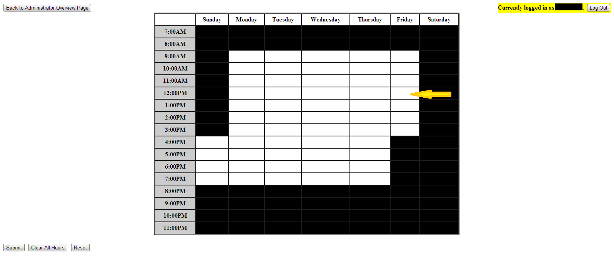
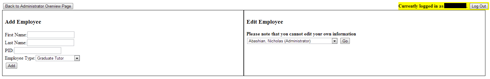
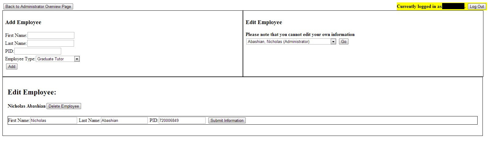
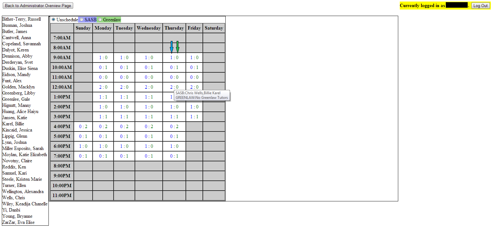
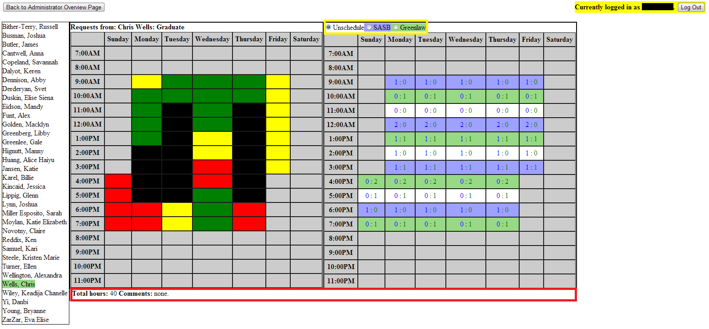

This page is used to set the hours that the center is open. Simply click a cell within the table to toggle the setting for that hour. For instance, the cell pointed to by the yellow arrow below represents the 12:00pm to 1:00pm shift on Friday. Clicking it now would turn it black and set the writing center to 'Closed' for this shift, whereas leaving it white will set the center to 'Open' for this shift. Changes made on this page WILL NOT BE SAVED unless you click 'Submit' before leaving the page. The 'Clear All Hours' button will set clear the form completely so that ever hour is set to 'Open'. The 'Reset' button will reset the form to whatever the hours were when this page was loaded. Note that neither of these buttons will make permanent changes, and if you wish to save the changes you still must click 'submit' before leaving the page.
This page is used to add, edit, and remove employees. The section to the left of the page is used to add an employee. Note that a new employee may share either a first OR last name with any other employee, but must have a unique first name and last name combination, ie you may not have two employees named 'John Smith', though you may have multiple named 'John' and multiple named 'Smith'. 'PID' must be a unique 9 digit integer, and must be the employee's UNC PID associated with the employee's ONYEN. Once you click 'add', the employee will be added to the system if no conflicts are found. The section to the right of the page is used to edit existing employees. First, select an employee from the dropdown list, and press 'Go'. Note that you cannot edit your own information. This is to prevent accidentally locking yourself out of the system.
Once you click 'Go' for the employee you wish to edit, the lower section will be made visible, as can be seen below. Here you may edit an employee's first and last name as well as their PID and, if they are a tutor, their status as either 'Graduate' or 'Undergraduate', which affects the number of hours they are assigned by the algorithm. The same restrictions apply to editing a tutor as to creating one. For these changes to be saved, you must click 'Submit Information' and wait for the success message to appear at the top of the screen. If you wish to delete the employee you have selected, simply click the 'Delete Employee' button next to the employees name in the lower section.
This page is used to view the requests for a specific tutor, and to manually edit the schedule for the given tutor as well as to view comments that the tutor may have submitted. When the page loads, you will be presented with the view seen below. A complete list of all tutors is visible down the left side of the page, and a table is just to the right of that. Each cell represents a one hour shift for which the center is open. Shifts during which the center is closed are grayed out. The blue number, marked by the blue arrow below, represents the number of people that are currently scheduled to work in SASB during that shift. The green number, marked by the green arrow, is the number of tutors currently scheduled to work in Greenlaw during that shift. If you hover your mouse over the numbers in a cell, a small box will pop up that gives a full list of the tutors working in each location, as can be seen below.
Once you click on a tutor in the left section to start editing them, a view similar to the one below appears. The table to the left contains the requests submitted by the tutor. Here, Black means 'Busy' and the tutor has indicated they cannot possibly work this shift. Red indicates 'Prefer Not', indicating that a tutor could work at this time, but would strongly prefer to not be scheduled during this shift if possible. Yellow means 'Can Work', indicating that the tutor can easily work at this time and be OK, but that it isn't the ideal time. Green signifies 'Perfect', indicating that the tutor would like to have a shift at this time. Above this table is the tutors name and status (Undergraduate or Graduate). The right table contains that selected tutor's current schedule. This table is the same as above, except now certain shifts will be highlighted. Shifts highlighted in blue indicate that the tutor is scheduled to work in SASB during this shift. Cells highlighted in green indicate the tutor is scheduled to work in Greenlaw during this shift. By clicking the scheduling option radio buttons, highlighted in yellow below, you can change the active tutor's schedule. Simply select the option you wish to apply and click on a cell in the table. The cell will change color to indicate the tutor's new schedule and the database will update automatically. The section below both tables, highlighted in red below, contains the total number of hours the tutor is working and any comments the tutor may have submitted when they sent in their requests. Neither of these are updated unless you reload the tutor by clicking their name in the left section again.
This page is used to view all of the requests submitted by the tutors. It contains a large table full of text. Each cell contains every tutor that has indicated they are not busy during that shift, where 1 indicates 'Prefer Not' as above, 2 indicates 'Can Work', and 3 indicates 'Perfect'. This page may be useful for determing the best time to schedule the meetings, as you can quickly see how many people have indicated they are available at each shift.
TopThis page is used to view the schedule as it currently stands. It shows every shift in a table, and each shift contains all the tutors that are scheduled during that shift. The tutor name will be followed by either 'GLAW' or 'SASB', which indicates which location the tutor is scheduled for. This page may be useful to get a quick overview of the entier schedule, or to print a hard copy of the schedule as it stands.
TopThis page is used to run the scheduling algorithm. This button will confirm that you are certain that you wish to proceed before running, because running the algorithm will completely overwrite every tutor's assigned hours. YOU MUST WAIT for the algorithm page to fully load before you click away. The page loading is the algorithm running, so clicking away prematurely may result in an error in the system. Once the page has loaded text will appear indicating the algorithm has terminated and you may leave the page. It is quite likely that the algorithm will not result in a perfect schedule that complies with all of the restraints, so you will want to check each tutor's schedule under the 'Set Schedules' page to ensure you are happy with each tutor's assigned hours.
Top